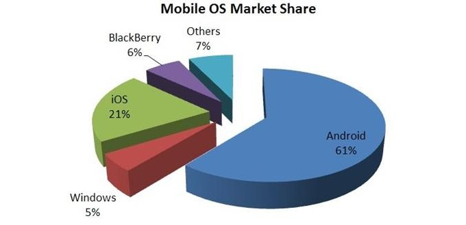

JUCSE 2013
Seguridad de Aplicaciones Web
por Francisco J Capdevila / @pancho_jay
y Daniel Maldonado / @elcodigok
Objetivos
- Exponer las principales problemáticas en las aplicaciones web
- Crear conciencia en la área de desarrollo sobre la mentalidad de los atacantes
- Proveer de los principios de seguridad básicos para un desarrollo seguro
(In)Seguridad en TI
- La inseguridad ha crecido en forma exponencial en los últimos años
- Un sistema informático seguro requiere:
- Disponibilidad
- Integridad
- Confidencialidad
- La seguridad es un proceso continuo, no es una meta ni un fin
Origenes de la Inseguridad en TI
- Velocidad en la que aparecen nuevas vulnerabilidades
- Las redes y sistemas actuales fueron concebidos para ser fáciles de usar
- Desconocimiento de los procesos, métodos y mentalidad de los atacantes
Objetivo de un atacante
- Dos tipos:
- White Hat
- Black Hat
- Acceso a información confidencial o procesos internos
- Spamming
- Fraude financiero
- Robo de información privada
- Espionaje industrial
- Robo de identidad
- Otros
Como piensa un Atacante?
- Buscar el camino más fácil
- Formas de penetrar:
- Adivinar o descifrar contraseñas
- Explotar vulnerabilidades del sistema
- Interceptar comunicaciones
- Ingeniería social
Comunmente se utiliza una combinación de las anteriores.
Actualidad Hacker
Áreas de ataque
OWASP
Open Web Application Securit Project
https://www.owasp.org/OWASP es un proyecto de código abierto dedicado a determinar y combatir las causas que hacen que el software sea inseguro. La Fundación OWASP es un organismo sin ánimo de lucro que apoya y gestiona los proyectos e infraestructura de OWASP
OWASP desde año 2001 organiza diferentes actividades, reuniones de todos sus miembros, eventos, conferencias de seguridad y fomenta la creación de proyectos para mejorar la seguridad de los sistemas.
Top 10 de OWASP
A1 Injection
Corresponde a la inyección de código, siendo las inyecciones SQL una de las más comunes.
A2 Broken Authentication and Session Management
Corresponde al mal manejo de las sesiones en aquellas aplicaciones que utilizan autenticación.
A3 Cross-Site Scripting (XSS)
Ocurre cuando existe validación pobre de la información ingresada por el atacante.
A4 Insecure Direct Object References
Puede derivar en un acceso no autorizado a información crítica debido a errores en el diseño o desarrollo.
A5 Security Misconfiguration
Corresponde a configuraciones no adecuadas que pueden impactar en la seguridad de la propia aplicación.
A6 Sensitive Data Exposure
Se refiere a la protección incorrecta de datos críticos tales como, por ejemplo, números de tarjetas de crédito, contraseñas, entre otros.
A7 Missing Function Level Access Control
Corresponde a la falta de controles desde el servidor, permitiendo a un posible atacante acceder a funciones a las que no debería.
A8 Cross-Site Request Forgery (CSRF)
Permite a un atacante generar peticiones sobre una aplicación vulnerable a partir de la sesión de la víctima.
A9 Using Known Vulnerable Components
Corresponde a la explotación de librerías, frameworks y otros componentes vulnerables por parte de un atacante con el fin de obtener acceso o combinar con otros ataques.
A10 Unvalidated Redirects and Forwards
Los atacantes aprovechan el uso de redirecciones de sitios web a otros sitios utilizando información no confiable (untrusted) para redirigir a las víctimas a sitios de phishing o que contienen malware.
A1 Injection
Inyección SQL es un método de infiltración de código intruso que se vale de una vulnerabilidad informática presente en una aplicación en el nivel de validación de las entradas para realizar consultas a una base de datos.
El origen de la vulnerabilidad radica en el incorrecto chequeo y/o filtrado de las variables utilizadas en un programa que contiene, o bien genera, código SQL. Es, de hecho, un error de una clase más general de vulnerabilidades que puede ocurrir en cualquier lenguaje de programación o script que esté embebido dentro de otro.
Inyección SQL
"SELECT * FROM usuarios WHERE nombre = '" + nombreUsuario + "';"
' or '1'='1
"SELECT * FROM usuarios WHERE nombre = '' or '1'='1';"
Inyección SQL
"SELECT * FROM usuarios WHERE nombre = '" + nombreUsuario + "';"
x'; DROP TABLE usuarios; --
"SELECT * FROM usuarios WHERE nombre = 'x'; DROP TABLE usuarios; --';"
DEMO
Inyección SQL
Blind SQL Injection
Blind SQL Injection también conocido como Inyección de SQL a ciegas. La idea es basarse en los comportamiento de las consultas que pueden dar dos posibles resultados True o False
Blind SQL Injection
http://dominio.com/noticia.php?id=2
SELECT titulo, descripcion FROM noticia WHERE ID = 2
http://dominio.com/noticia.php?id=2 and 1=2
SELECT titulo, descripcion FROM noticia WHERE ID = 2 and 1=2
http://dominio.com/noticia.php?id=2 and 1=1
A3 Cross-Site Scripting (XSS)
XSS o Cross-Site Scripting permite a una tercera persona inyectar código JavaScript en páginas web.
XSS es un vector de ataque que puede ser utilizado para robar información delicada, secuestrar sesiones de usuario, y comprometer el navegador, subyugando la integridad del sistema. Las vulnerabilidades XSS han existido desde los primeros días de la Web.
- Persistente: este tipo de XSS comúnmente filtrado, y consiste en embeber código HTML peligroso en sitios que lo permitan; incluyendo así etiquetas como 'script' o 'iframe'.
- Reflejada: este tipo de XSS consiste en modificar valores que la aplicación web utiliza para pasar variables entre dos páginas, sin usar sesiones y sucede cuando hay un mensaje o una ruta en la URL del navegador, en una cookie, o cualquier otra cabecera HTTP (en algunos navegadores y aplicaciones web, esto podría extenderse al DOM del navegador).
Cross-Site Scripting
<body onload=alert('test1')>
<b onmouseover=alert('Wufff!')>click me!
<img src="http://url.to.file.which/not.exist" onerror=alert(document.cookie);>
Malformación en Tag IMG
<IMG """><SCRIPT>alert("XSS")</SCRIPT>">
End title tag
</TITLE><SCRIPT>alert("XSS");</SCRIPT>
Hex encoding
<A HREF="http://0x42.0x0000066.0x7.0x93/">XSS</A>
DEMO
Cross-Site Scripting (XSS)
A5 Security Misconfiguration
Corresponde a configuraciones no adecuadas que pueden impactar en la seguridad de la propia aplicación.
Para ello es necesario aplicar siempre los PRINCIPIOS DE FORTIFICACIÓN DE SISTEMAS.
- Mínimo Punto de Exposición (MPE)
- Mínimos Privilegios Posibles (MPP)
- Defensa en Profundidad (DP)
Principios de fortificación de sistemas
Mínimo Punto de Exposición
Un servidor sólo debe exponerse en lo que sea estrictamente necesario para su rol, es decir, un Servidor Web no debe tener cargado el software de impresión y mucho menos ejecutando demonios de servicio de impresión en red.
Principios de fortificación de sistemas
Mínimos Privilegios Posibles
Todo componente dentro de un sistema debe ejecutarse con los privilegios necesarios para cumplir con su rol y nada más. Un sitio web nunca debe correr como root porque no es necesario para dar servicio y lo único que puede suceder es que un atacante que consiga vulnerar el sitio obtenga esos privilegios de root en el sistema.
Principios de fortificación de sistemas
Defensa en Profundidad
Se deben implementar todas las medidas de seguridad que sean posibles teniendo en cuanta dos factores:
- Una medida de seguridad no debe anular a otra. El ejemplo más claro de esto es cifrar las comunicaciones e instalar un Sistema de Detección de Intrusiones de Red (NIDS), ya que el segundo no podría detectar ataques por red si se usan los canales cifrados.
- Las medidas de protección no pueden anular la utilidad de un sistema. Si las medidas de protección hacen que el sistema deje de dar servicio en tiempo útil entonces no son medidas viables.
Más recomendaciones
- Nunca dejar las configuraciones por defecto
- No utilizar Contraseñas por defecto
- Deshabilitar todos aquellos servicios que no se utilicen
- Mantener el Sistema Actualizado
DEMO
Security Misconfiguration
Principios para desarrollar código seguro
- Diseños simples. KISS (del inglés Keep It Simple, Stupid! : «Manténlo sencillo, ¡Estúpido!»)
- Utilización y reutilización de componentes de confianza
- Nunca confiar en las entradas de datos
- Defensa en profundidad
- Minimizar la superficie de ataque
- Controlar los errores de manera elegante
- Tan seguros como el eslabón más débil
- Mantener el software de terceros actualizado
- La seguridad por oscuridad no funciona
- Minimizar los privilegios:
- Usuarios del SO
- Usuarios de las BDs
- Usuarios dentro de la aplicación
- Testing lo mas exhaustivo posible
- Los Firewalls y la Criptografía no son una panacea
Estándar de seguridad
- Interacción con el usuario
- Autenticación
- Autorización
- Validación de datos
- Manejo y protección de datos
- Transporte
- Almacenamiento
- Errores
- Administración de entornos
- Configuración
- Gestión de cuentas
- Monitoreo
- Logs
- Herramientas adicionales
Buenas Prácticas
Problemas conocidos
JUCSE 2013
Seguridad en Aplicaciones Móviles
por Francisco J Capdevila / @pancho_jay
y Daniel Maldonado / @elcodigok
Motivación
- Las Apps se presentan como una importante línea de negocio.
- Constantes mejoras en sus tecnologías.
- La información sensible se almacena y se transmite a través de apps
Para tener en cuenta
- De media, los usuarios de smartphone pasan 2,7 horas diarias utilizando las redes sociales desde sus dispositivos móviles
- El 90% de las aplicaciones descargadas no se utilizan más de 10 veces.
- El 25% de los propietarios de smartphones está permanentemente conectado a internet a través de su dispositivo móvil.
División del mercado
Enlaces de Interés
Top 10 de OWASP Mobile
- Independientes de la plataforma
- Focalizado en areas de riesgo en lugar de vulnerabilidades puntuales
M1 Insecure Data Storage
descripcion
M2 Weak Server Side Controls
descripcion
M3 Insufficient Transport Layer Protection
descripcion
M4 Client Side Injection
descripcion
M5 Poor Authorization and Authentication
descripcion
M6 Improper Session Handling
descripcion
M7 Security Decisions via Untrusted Inputs
descripcion
M8 Side Channel Data Leakage
descripcion
M9 Broken Cryptography
descripcion
M10 Sensitive Information Disclosure
descripcion
M1 Insecure Data Storage
Almacenamiento Inseguro de Datos
Información sensible es almacenada sin protección alguna o bien con seguridad débil.
- Información sensible
- Información de autenticación
- Información de negocio
- Información privada
- Aplica a datos almacenados localmente y en la nube
- Generalmente resultado de:
- No encriptar los datos
- Caché de datos
- Permisos débiles o globales
- No uso de las buenas prácticas de la plataforma
Ejemplo
static public void saveCredentials(Context context, String username,
String password) {
SharedPreferences credentials = context.getSharedPreferences(
"userinfo", Context.MODE_WORLD_READABLE); // MUY MALA IDEA
SharedPreferences.Editor editor = credentials.edit();
editor.putString("username", username); // Un poco mejor
editor.putString("password", password);
editor.putBoolean("remember", true);
editor.commit();
}
M2 Weak Server Side Controls
- Aplica a los servicios de backend
- No corresponde a aplicaciones moviles per se
- No se puede confiar en el cliente
- Afortunadamente son problemas bien conocidos
- Los controles deben ser re-chequeados (ej: Comunicaciones fuera de banda)
- OWASP Top 10
- OWASP Cloud Top 10
- OWASP Web Services Top 10
Ejemplo
M3 Insufficient Transport Layer Protection

Causas
- Falta total de cifrado para la información transmitida
- Cifrado débil
- Cifrado fuerte, pero ignorando advertencias de seguridad
- Ignorar errores en la validacion de certificados
- Ante fallos sucesivos, enviar en texto plano
Riesgos
- Ataque MITM
- Tampering with data in transit
- Pérdida de confidencialidad (Integridad, autenticidad)
Ejemplo:
Google ClientLogin Authentication Protocol- Se envia el encabezado de autorización sobre HTTP
- Cuando los usuarios se conectand via WI-FI las aplicaciones envian automaticamente el token en un intento de sincronizar información con el server
- Un atacante puede sniffear el tráfico e impersonar al usuario
Prevención
- Asegurarse que toda la información privada se transmita cifrada
- Esto incluye información sobre la red móvil, Wi-Fi, Bluetooth y NFC.
- Cuando se disparan excepciones de seguridad, estas no deben ser ignoradas
M4 Client Side Injection
Causas
- Aplicaciones usando librerias del browser
- Puramente Web
- Hibridas
- Algunas cosas conocidas
- XSS e inyección HTML
- Inyección SQL
- Nuevas combinaciones
- Envío de SMS y llamados
- Compra de aplicaciones sin consentimiento
Riesgos
- Dispositivo
- Fraude telefónico
- Escalada de privilegios
Ejemplo
RELLENAR!Prevención
- Sanitizar o escapar los datos no confiables antes de ejecutarlos o renderizarlos
- Usar consultas preparadas para las llamadas a la DB. La concatenación no es buena.
- Minimizar el uso de funcionalidades nativas atadas a funcionalidades web hibridas
M5 Poor Authorization and Authentication
Causas
- Parte móvil, parte de la arquitectura.
- Algunas aplicaciones se basan en algunso valores inmutables (IMEI, MAC, IMSI, UUID), potencialmente comprometidos.
- Los identificadores a nivel hardware persisten a la limpieza y reseteo a fabrica.
- Añadir información de contexto suele ayudar, pero no es suficiente.
Riesgos
- Escalada de privilegios
- Acceso no autorizado
- Suplantación de identidad
Ejemplo
RELLENAR!Prevención
- La información de contexto puede mejorar las cosas, pero sólo como parte de una implementación multifactor
- La comunicación Out-of-band no es suficiente cuando se trata del mismo dispositivo
- Nunca usar el ID del dispositivo o del usuario como identificador único.
M6 Improper Session Handling
Causas
- Las sesiones en dispositivos duran mucho más.
- Por qué? Usabilidad y conveniencia
- Las aplicaciones mantienen la sesión mediante:
- HTTP cookies
- OAuth tokens
- SSO authentication services
- Usar los identificadores de dispositivo como token de sesión es MALA idea.
Riesgos
- Escalada de privilegios
- Acceso no autorizado
- Evitar licencias y pagos
Ejemplo
Rellenar!!Prevención
- No es malo forzar al usuario a reautenticarse seguido.
- Asegurar que los tokens pueden ser anulados en caso de pérdida o robo del dispositivo.
- Usar sistemas de alta entropía a la hora de generar los tokens.
M7 Security Decisions via Untrusted Inputs
Causas
- Pueden ser utilizadas para hacer bypass de permisos y modelos de seguridad.
- Formas similares en cada plataforma:
- Android: Intents
- iOS: URL schemes
- Muchos vectores de ataque
- Aplicaciones maliciosas
- Inyección del lado del cliente
Riesgos
- Escalada de privilegios
- Filtrado de información
- Consumo de recursos pagos
Ejemplo
http://software-security.sans.org/blog/2010/11/08/insecure-handling-url-schemes-apples-ios/Prevención
- Comprobar los permisos de usuario cuando se ingresan datos
- Pedir autorización al usuario antes de permitir ciertas acciones.
- En los casos donde no se puedan comprobar los permisos, asegurarse de que sean necesarios pasos adicionales para iniciar acciones susceptibles